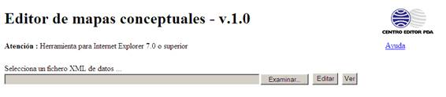
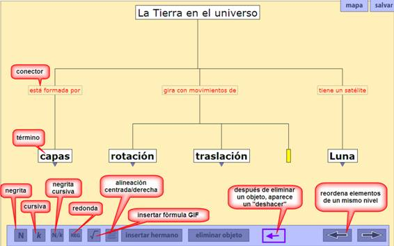
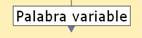
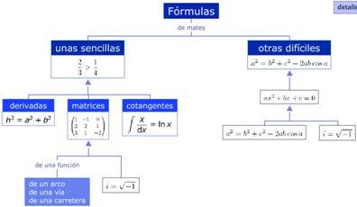

EDITOR DE MAPAS CONCEPTUALES
CEPDA
08/03/2011
Herramienta a utilizar
con Explorer 10 o inferior. No funciona con Explorer 11. No funciona con Firefox.
El editor de Mapas
conceptuales permite crear un mapa y visualizar los ya creados.
Pantalla inicial

- Para
editar un guión antiguo: seleccionar el archivo con el botó Examinar y clicar
Editar
- Para
crear un guión nuevo: clicar directamente el botón Editar
- Para visualizar un mapa nuevo: seleccionar y clicar sobre Ver
Modo edición

Creación de MC
El
editor muestra de entrada un conjunto de Término+conector+hijos vacíos.
-
Para crear un elemento hermano de otro
existente: botón “añadir
hermano” o flecha “cursor derecha” del teclado del ordenador.
o
Atención:
hay que estar situado en el nivel donde se quiere crear el elemento (conector o
término).
-
Para crear un elemento hijo de otro: clicar sobre la flecha “cursor abajo” del
teclado.
o
Atención: las cajas de conectores aparecen por
defecto. Si no tienen que aparecer
conectores, dejarlas vacías.
-
Para moverse entre cajas de un mismo nivel: mejor posicionarse con el mouse.
-
Para poner cursiva o negrita: botón correspondiente en la parte
inferior.
-
Para cambiar el orden de los elementos de un
nivel: botones flecha en la
parte inferior de la aplicación.
Texto dentro de las cajas
-
Los textos van
centrados por defecto. Cuando sea necesario alinearlos a la izquierda (peor ejemplo,
en los listados de conceptos), clicar sobre el botón correspondiente en la
barra inferior.
-
Los saltos de línea
en las cajas de texto (por ejemplo, en los listados de conceptos) hay que crearlos
manualmente.
Visualización
La
caja activa aparece en amarillo.
- Atención: en la pantalla de edición solo se visualizan
tres elementos (término+conector+hijo).
-
Para visualizar elementos inferiores: situarse sobre el último elemento y hacer
clic sobre la flecha “cursor abajo” del teclado.
-
Para indicar que un término tiene elementos dependientes aparece una flecha. 
-
Clicando sobre
el botón “mapa” se accede a la visualización real del MC.
o
Situándose
sobre la caja de un elemento y clicando se vuelve a la pantalla de edición, abierta
en el elemento escogido.
o
Se puede
volver a la vista de edición con el botón Detalle.
Creación
de mapas con fórmulas
- Atención: los SWF que se usan en el mapa
conceptual han de estar siempre en la
misma carpeta que el xml del mapa conceptual. De no ser así, el editor no
abrirá el archivo.
-
Para insertar una fórmula, hacer clic sobre el botón y cargar el archivo SWF.
-
Las fórmulas pueden ir acompañadas de un texto o solas. Este es un ejemplo de
visualización de ambas.
